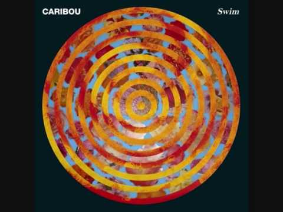
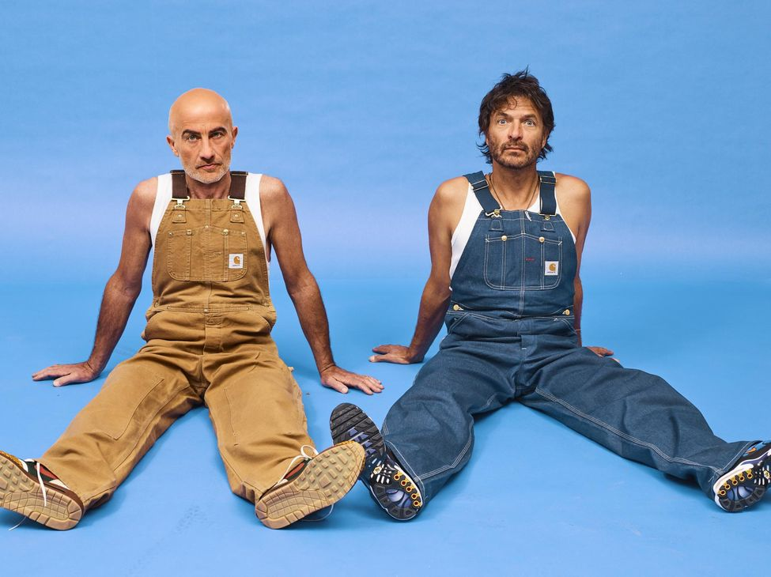
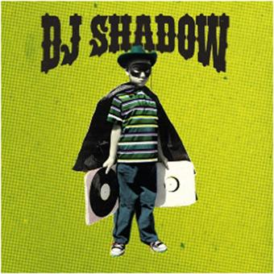
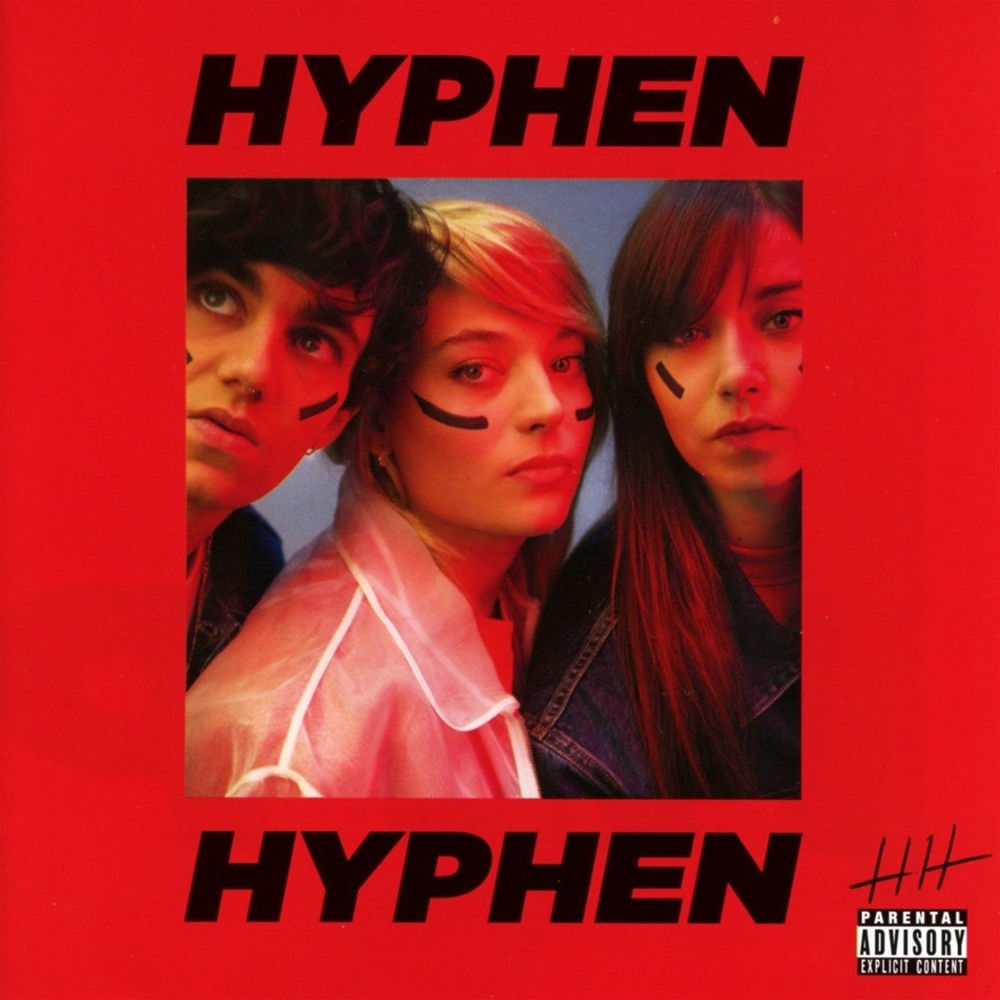
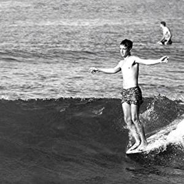

Lomepal (de son vrai nom Antoine Valentinelli), né le 4 décembre 1991 à Paris, est un rappeur et chanteur français.
Réserver
Caribou, de son vrai nom Daniel V. Snaith, né en 1978 à London en Ontario, est un musicien de musique électronique canadien. Il se faisait précédemment appeler Manitoba. Daniel Snaith officie également sous le nom de Daphni pour ses morceaux et remix plus techno.
Réserver
Cassius est un duo musical français composé de Philippe Cerboneschi (« Zdar ») et Hubert Blanc-Francard (« Boom Bass »). Sous ses différentes incarnations le duo est assimilé au mouvement « French Touch » de musique électronique dans la seconde moitié des années 1990.
Réserver
Joshua Paul Davis, dit DJ Shadow, est un musicien, producteur, et disc jockey américain, né le 29 juin 1972 à Hayward, en Californie. Il est aussi reconnu comme une figure emblématique du mouvement hip-hop expérimental. Il est le premier à avoir produit un album entièrement composé de samples. Pour son activité de DJ, il possède une grande collection de 60 000 albums.
Réserver
Hyphen Hyphen est un groupe de pop rock électronique français, chantant en anglais, créé en 2011 à Nice. Il est composé de trois membres : Santa (chant), Adam (guitare), Line (basse) amis depuis le lycée.
Réserver
The Rapture est un groupe de rock américain, originaire de New York. Le groupe joue un mélange de plusieurs influences post-punk, dance-punk, new wave, acid house, disco, electro et rock 'n' roll. Le groupe est formé en 1998 et séparé en 2014.
Réserver